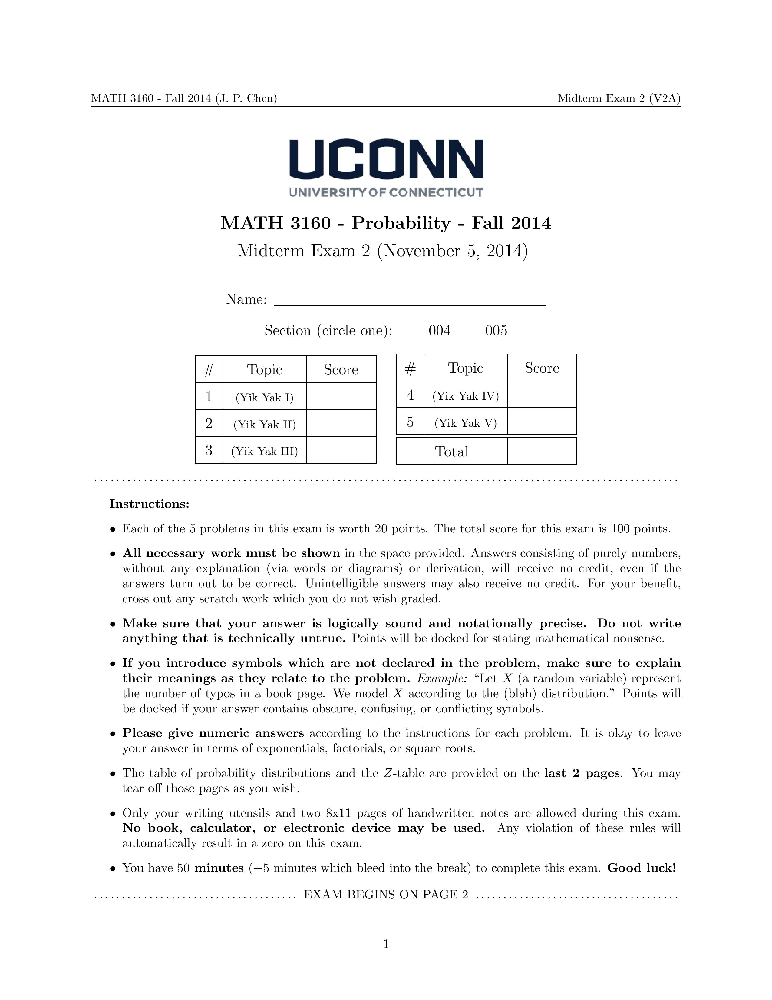
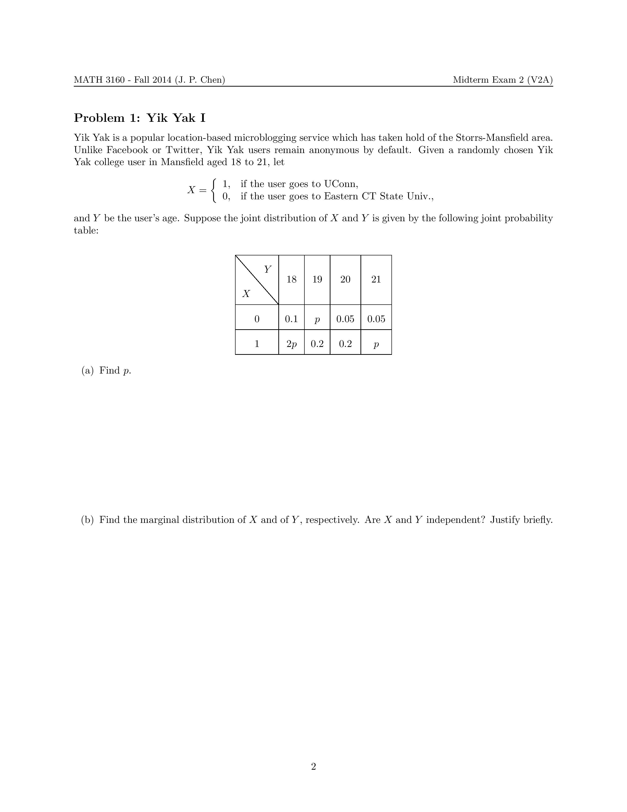
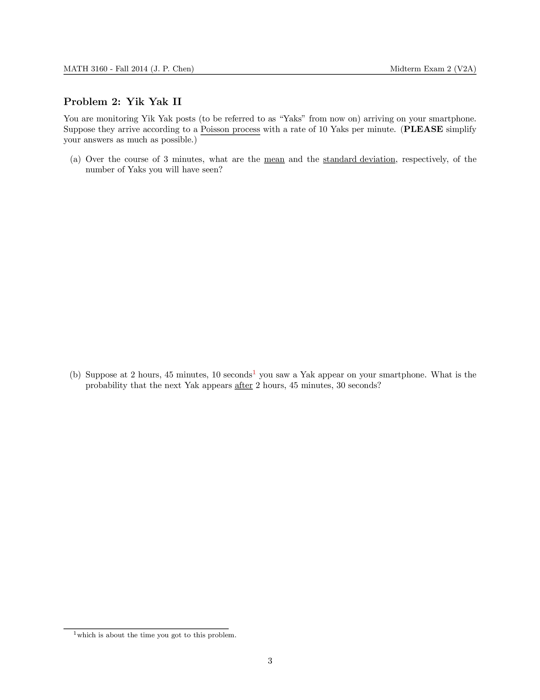
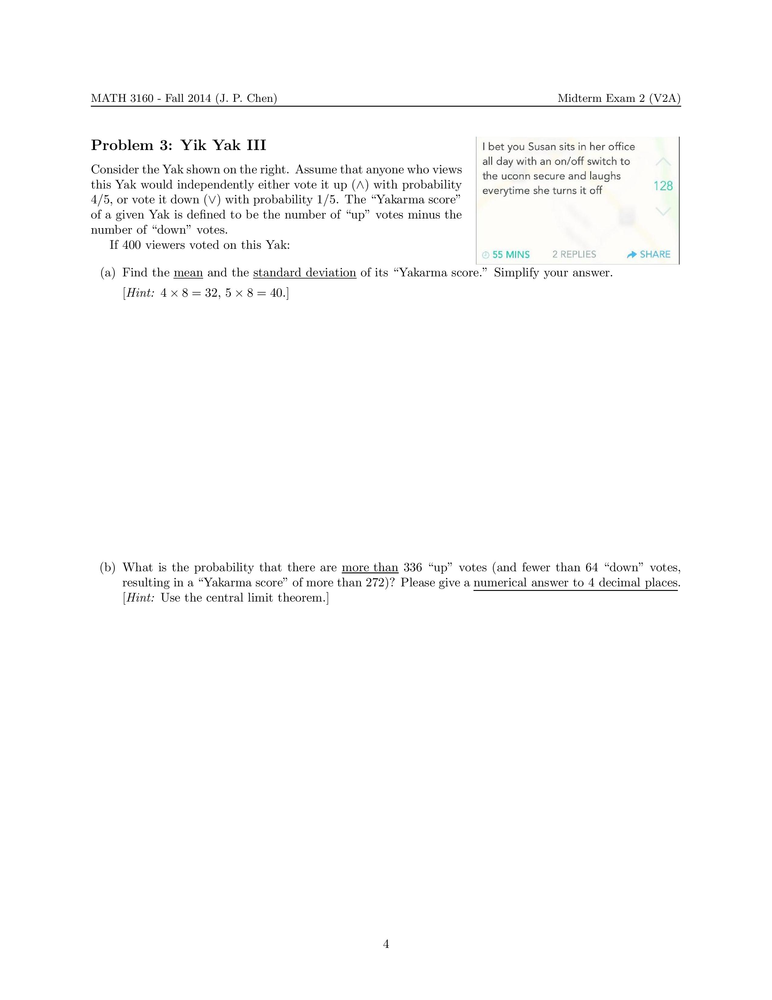
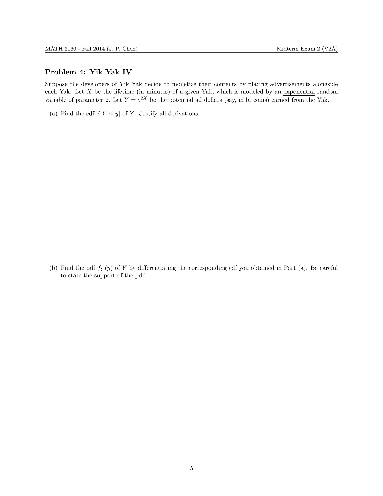
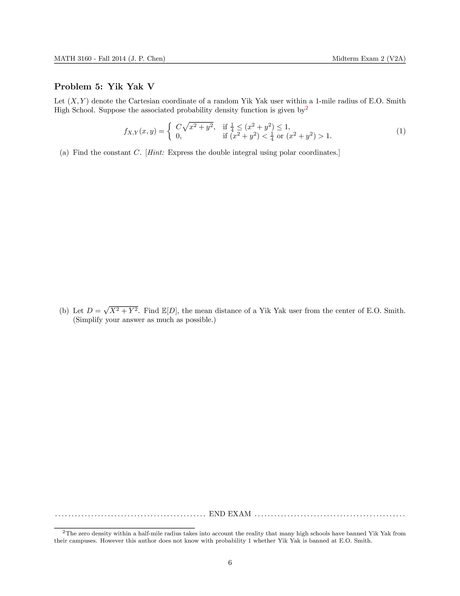

|  |  |  |
|  |  |  |
Math concepts used: Random variables (binomial, normal, exponential, Poisson, jointly distributed), independence, expectation, variance, Poisson process.
Background: In Fall 2014 I started to notice that UConn students were using the social app Yik Yak, as opposed to Twitter, to complain about things on campus. One of the features of Yik Yak is that the users stay anonymous, but can only post to a community within a certain distance (a 1.5 mile radius, say). The posts (called Yaks) stay up for about 30 minutes before disappearing. Other users can vote the Yaks up or down; Yaks receiving a score of -5 or lower are "voted out" and disappear from Yik Yak.
What I did: Since many aspects of Yik Yak are almost perfectly modeled by probability concepts, I set out to write an entire exam which refers to specific functions or criticisms of Yik Yak. Here is a problem-by-problem breakdown:
Problem 1: Allusion to the phenomenon that UConn Yik Yakkers have a tendency to criticize students from nearby Eastern CT State University (in Windham, CT).
Problem 2: The arrival times of Yaks are modeled using a Poisson process, with waiting times being exactly independent exponential random variables.
Problem 3: The up/down vote mechanism, modeled as a binomial distribution. Then use the "baby central limit theorem" to estimate a binomial probability by a normal (Gaussian) one with the help of the standard normal table.
Problem 4: Allusion to the creators of Yik Yak not wanting to monetize on their product. I decided to help them do a calculation, illustrating the use of transformation of random variables.
Problem 5: One of the biggest controversies surrounding Yik Yak at the time was its use (as a bullying tool) on high school campuses. Some high schools outright banned it. Since UConn has a high school right next door (E.O. Smith), I decided to ask students to calculate the density distribution of Yik Yak users, assuming that Yik Yak is "geoblocked" within a half-mile radius of the high school.
Aftermath: Some of my students gave me weird faces after finishing their exams. A student, who was attending a different section of MATH 3160, later told me
that I became semi-famous among honors students for pulling off the stunt. (This happened before the Yale-UConn problem.)
One semester later (in May 2015), a student in my Spring 2015 MATH 3160 came to me to say that s/he wrote the Yak ("Susan turns on/off the UConn secure WiFi") shown alongside Problem 3.
Postscript (05/25/2017): As has been widely reported, Yik Yak shut down its service as of May 5, 2017. Wikipedia has a brief history.
{kind=link}
{kind=link}
{kind=link}
{kind=link}
{kind=link}
{kind=link}